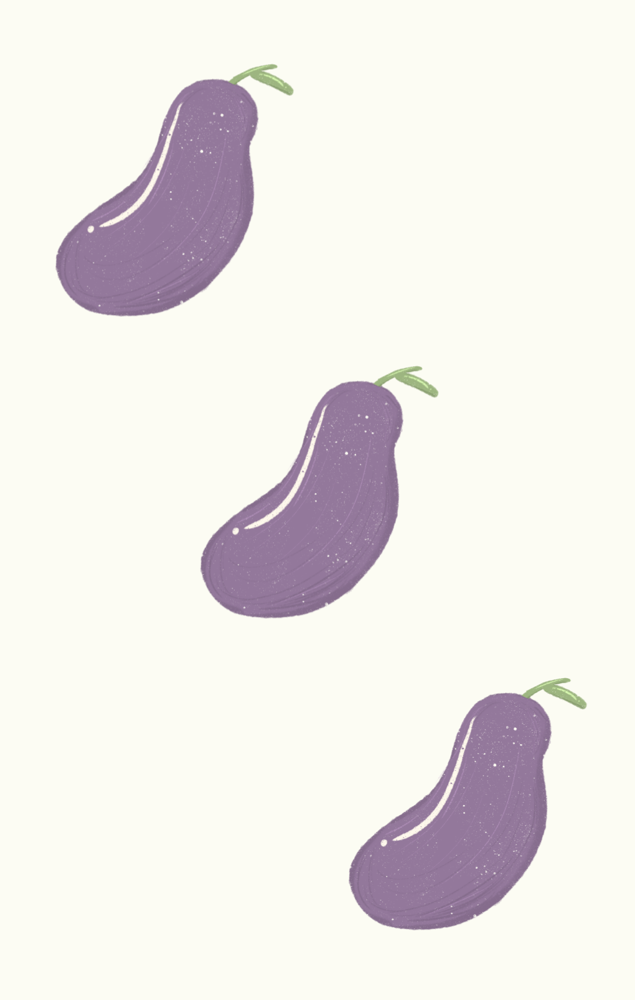
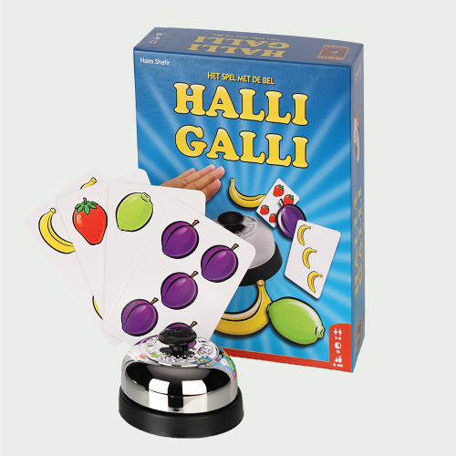
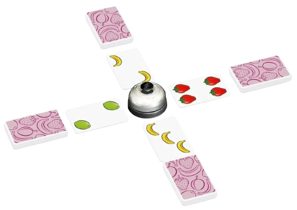

Halli Galli: Instruction. Halli Galli: Instruction. Halli Galli:
Instruction. Halli Galli: Instruction. Halli Galli: Instruction.



So...What will you get in a Halli Galli box?

- 56 playing cards, showing 4 kinds of fruit in groups of 1 to 5
- A ringing bell that goes 'ding'
- Game instruction manual - You won't need it if you browse this site to learn instead!
TOP 5 TIPS TO GET STARTED:
1. The deck is evenly distributed between the players.
2. All players hold their deck face down and take turns dealing one card face up in front of them.
3. As each player reveals their next card, the instant you see a total of five of one kind of fruit on the table, hit the bell. If you're correct, you pick up all the played cards and put them into your deck; if you're wrong, you pay the other players one card each.
4. When you run out of cards, you're out.
5. When two players are left, they play until the bell is struck once more, then the game ends and the taller deck wins!
